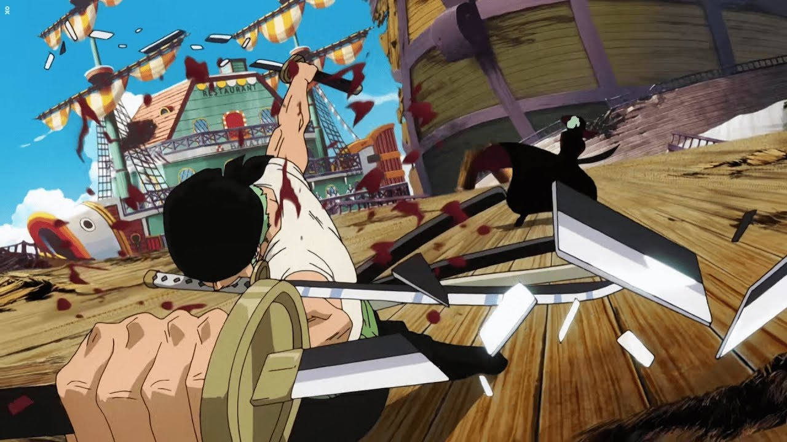

Первая причина
Бои реализованы очень классно. Это выглядит
эпично и не кажется затянутым, как в некоторых
произведениях. Очень нравится наблюдать за тем
как главный герой растёт над собой, набирается сил
и с каждым боем становится сильнее. Так же не
забывают и про бои остальных персонажей. И они не
кажутся скучным растягиванием хронометража,
напротив, интересно наблюдать за тем как у каждого
из них свой собственный стиль боя, их техники.
